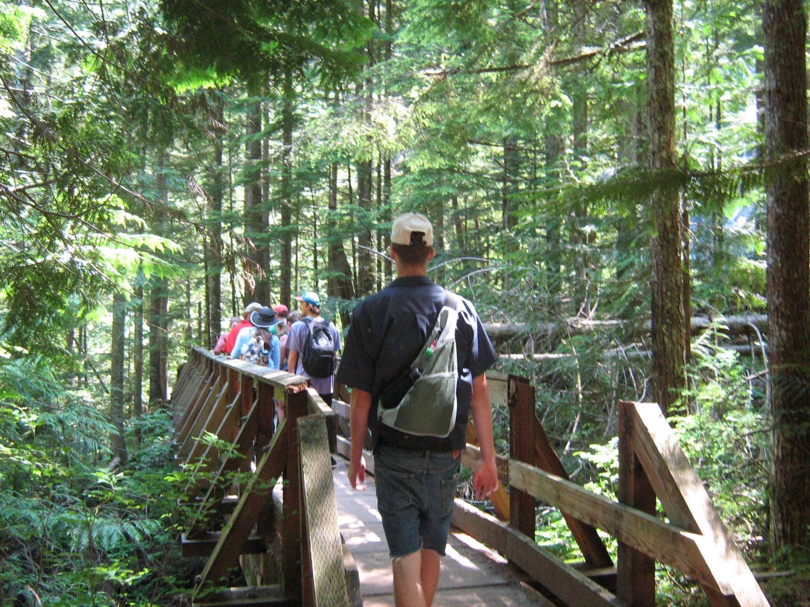

About Gavin Newell

Hey there! I'm Gavin, and I have an insatiable love for the great outdoors. You'll often find me hiking with friends, seeking new adventures, and immersing myself in the wonders of nature. Nature, to me, is a canvas of endless beauty and joy waiting to be captured.
As a nature photographer, I've dedicated my lens to freezing those fleeting moments when the world around us reveals its purest essence. Each snapshot is a testament to my passion for the intricate details, the vibrant colors, and the untamed spirit of the natural world.
Whether it's the quiet serenity of a hidden forest glade or the exhilarating rush of a cascading waterfall, I strive to convey the magic of these moments through my photography. Join me on this visual journey as I explore and celebrate the extraordinary tapestry of nature that surrounds us.
Thanks for stopping by, and I hope my work brings a bit of the outdoors into your day!
With years of experience in the field, Gavin specializes in a variety of photography styles, delivering stunning visual narratives that leave a lasting impression. His commitment to perfection and artistic flair shine through in each photograph, making him a sought-after professional in the industry.